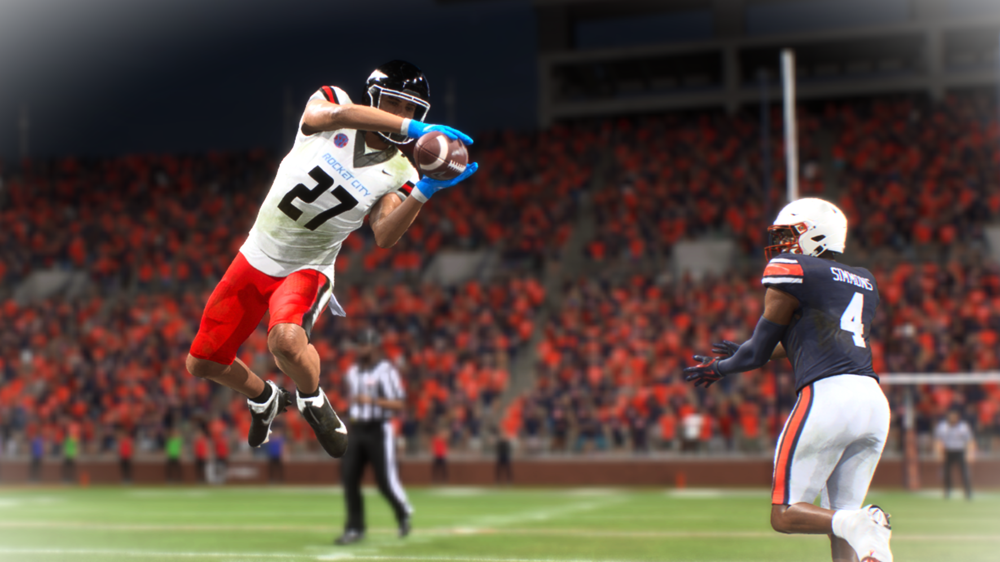

Nick Dorsey
#27 | Free Safety (FS) | Sophomore
Oklahoma City, Oklahoma | 6'2", 181 lbs
Player Information
| Detail | Info |
|---|---|
| Full Name | Nick Dorsey |
| Position | Free Safety (FS) |
| Class | Sophomore |
| Height / Weight | 6'2" / 181 lbs |
| Hometown | Oklahoma City, Oklahoma |
| Status | Returns |
Awards and Honors
| Award | Result |
|---|---|
| National First Team All-American | Selected |
| SEC First Team All-Conference | Selected |
Season 1 Defensive Stats
| Stat | Value |
|---|---|
| Games Played | 13 |
| Total Tackles | 74 |
| Tackles For Loss | 2 |
| Interceptions | 6 |
| Defensive Touchdowns | 2 (1 pick-six + 1 fumble recovery TD) |
| Forced Fumbles | 2 |
| Fumble Recoveries | 1 |
| Pass Deflections | 3 |
| Total Turnovers Created | 9 (6 INT + 2 FF + 1 FR) |
Top 3 Performances
| Game | Tackles | INT | DEF TD | Highlight |
|---|---|---|---|---|
| Week 5 vs #4 Florida (W 54-39) | 11 | 2 | 1 (pick-six) | Two interceptions including a pick-six against the #4 team in the country. Also forced a fumble on a kick return. SEC + National Defensive POTW. The game that put him on the national award map. |
| Week 4 @ UCF (W 42-21) | 4 | 1 | 1 (fumble recovery TD) | Pick-six and fumble recovery TD on back-to-back possessions. The first game where Dorsey announced himself as a playmaker, not just a tackler. |
| Week 11 @ #23 Auburn (W 39-38) | 12 | 1 | 0 | Game-sealing interception. Auburn's kicker had already hit from 60 yards and was in range. Instead of letting Auburn attempt the go-ahead field goal, Dorsey jumped the route and picked it off. Saved the season. Legion mental boosted every DB on the field. |
Highlight

Player Storyline | The Coverage Specialist
Going into Year 1, we initially labeled Nick Dorsey as having all the general physical tools to be an okay safety, but not the potential to be a great safety in the SEC.
Through the first three games, Dorsey was fine, solid, just as expected. He made tackles, he was always in the right spot, but he wasn't creating the kind of explosive plays that great players make..
From then on, he turned into a completely different player. He finished the season with 6 interceptions and 2 defensive touchdowns from the free safety position, which would be elite numbers for a cornerback and are almost unheard of for a safety. He had developed a knack for making the play when it mattered most. He earned first-team All-American honors.
Dorsey's impact went beyond his own stat line. When he made an interception, a pass breakup, or a big hit, the entire secondary seemed to feed off it. The cornerbacks played with more confidence. The other safety played more aggressively. His playmaking was contagious in a way that lifted the players around him, and on a defense that struggled with consistency in the secondary all season, Dorsey was the one constant you could count on to show up when the moment demanded it.